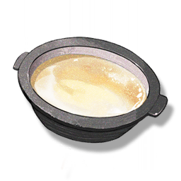

Resonators
Monsters
Weapons
Items
Clear Soup
Resources

Ingredients that need to be obtained through food research.
A common auxiliary material, often used as a substitute for water in cooking, added to dishes or soups to make the taste richer.